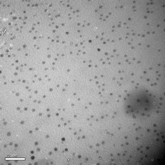
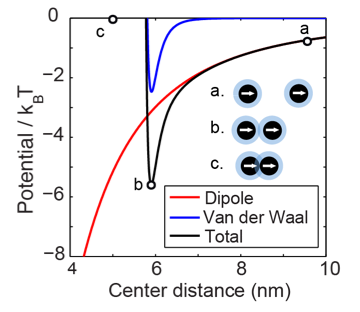
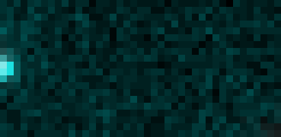
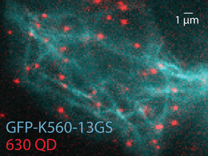
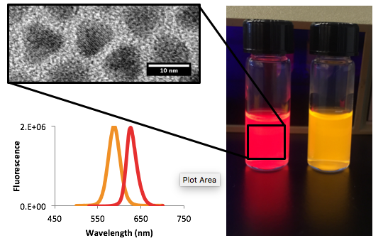
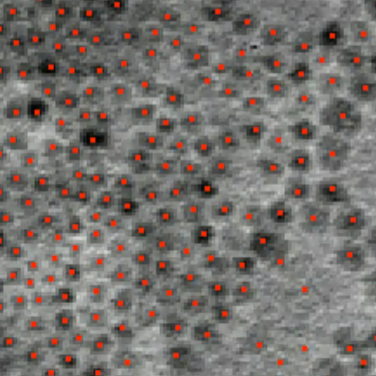
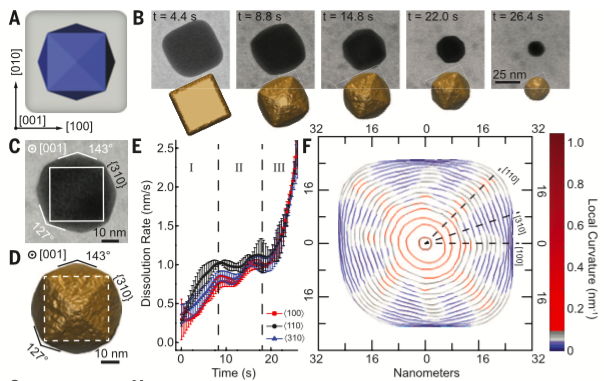
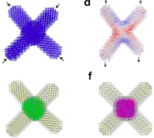
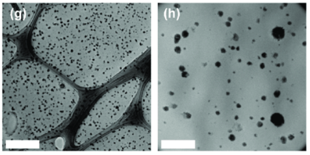

Research
I am interested in the intersection of chemistry, biology, and computer science. My first research focus was the synthesis of semiconductor nanoparticles, working at UC Berkeley. Since then, my research has shifted to studying dynamic nanoscale systems in general and developing tools to do so from computer science and chemistry. These topics includes nanoscale self-assembly, single molecule imaging, and liquid electron microscopy. Along with these, I have become very interested in image analysis and computer vision. In the future, I am interested in translating my knowledge and skills into medical and clinical applications working at Stanford University.
Projects
Dynamic Electron Microscopy
Liquid electron miscropy enables us to finally peer into a dynamic world of particles and atoms. Currently, the technique limited to metallic materials that can withstand the bombardment with electrons and produce high contrast images. However, I believe this is the first step to finally seeing detailed biological systems in action.


We used this technique to study a variety of new phenomena. We measured piconewton forces generated by Van der Waals and magnetic dipole interactions between nanoparticles over 1-7 nm length scales. These interactions led to assembly of nanoparticles into organized chains and lattices. When templated by circular liquid droplets, we could produce nanoparticle rings 50-100nm in diameter. I also analyzed the growth and etching of crystals. In our study published in Science magazine, we demonstrated that preferential etching along surfaces with high curvature can be used to generate nanoparticles with new types of geometries, like tetrahexahedrons.

Protein labeling with Nanoparticles
Working at the Molecular Foundry at Lawrence Berkeley National Laboratory, I designed fluorescent nanoparticles to be bright, stable probes to visualize the motion of proteins inside cells.


Proteins are incredibly dynamic: they move around within cells and for many, internal moving parts are critical for their function. In this project, we were interested in kinesin, a motor protein that transports vesicles along microtubules via two feet and a hand over hand motion.
I optimized the nanoparticle synthesis to produce two particles of different sizes with two different colors that were small, bright, and had narrow emission linewidths. These two colors would be used to track each head of a single kinesin independently. I coated the nanoparticles in amphiphilic polymer so they would be soluble inside the cell and attached them to engineered kinesin via the SNAP-tag labeling system. The nanoparticle I developed were 3x brighter than the commercially available ones and significantly improved the imaging in vivo.

Image Analysis and Segmentation


During my microscopy work, I have developed several custom algorithms and applications for image segmentation and analysis. These are particularly suited for electron microscopy videos and for segmenting images, tracking objects, and analyzing object properties such as velocities, geometric relations, and growth processes.

The low signal to noise ratio and fluctuations in background intensity make electron microscopy images particularly challenging for accurate image segmentation. I developed a successful method that uses laplacian of gaussian filters, that when convolved with the image, detect nanoparticle shaped blobs. By using a range of filter sizes in a scale space approach, I was able to quickly capture particles at multiple size scales, avoiding extensive preprocessing, and distinguish overlapping particles. My latest project is applying gaussian fitting from super-resolution flourescence microscopy to obtain tracking of nanoparticle motion with sub-nm accuracy.
Undestanding Stress Sensing Tetrapod Crystals


The Alivisatos lab developed tetrapod shaped nanoparticles capable of sensing tensile stress. When embedded in a polymer matrix, stress and strain applied to the matrix could be measured via a change in fluorescence emission wavelength from the particles.
I used image analysis techniques to better understand this effect, studying electron microscopy images of the embedded particles. We found that the particles tended to aggregate within the polymer, and the sensing effected depended on how tightly they were packed together. Ultimately, we were able to use this technology to measure the deformation of an artificially respired chicken lung.
Publications
-
Quantum dot luminescent concentrator cavity exhibiting 30-fold concentration
ND Bronstein, Y Yao, L Xu, E O’Brien, AS Powers, VE Ferry, AP Alivisatos, ...
ACS Photonics 2 (11), 1576-1583, 2015 Show Abstract
Luminescent solar concentrators doped with CdSe/CdS quantum dots provide a potentially low-cost and high-performance alternative to costly high-band-gap III–V semiconductor materials to serve as a top junction in multijunction photovoltaic devices for efficient utilization of blue photons. In this study, a photonic mirror was coupled with such a luminescent waveguide to form an optical cavity where emitted luminescence was trapped omnidirectionally. By mitigating escape cone and scattering losses, 82% of luminesced photons travel the length of the waveguide, creating a concentration ratio of 30.3 for blue photons in a waveguide with a geometric gain of 61. Further, we study the photon transport inside the luminescent waveguide, showing unimpeded photon collection across the entire length of the waveguide.
-
Single-particle mapping of nonequilibrium nanocrystal transformations
X Ye, MR Jones, LB Frechette, Q Chen, AS Powers, P Ercius, G Dunn, ...
Science 354 (6314), 874-877, 2016 Show Abstract
Chemists have developed mechanistic insight into numerous chemical reactions by thoroughly characterizing nonequilibrium species. Although methods to probe these processes are well established for molecules, analogous techniques for understanding intermediate structures in nanomaterials have been lacking. We monitor the shape evolution of individual anisotropic gold nanostructures as they are oxidatively etched in a graphene liquid cell with a controlled redox environment. Short-lived, nonequilibrium nanocrystals are observed, structurally analyzed, and rationalized through Monte Carlo simulations. Understanding these reaction trajectories provides important fundamental insight connecting high-energy nanocrystal morphologies to the development of kinetically stabilized surface features and demonstrates the importance of developing tools capable of probing short-lived nanoscale species at the single-particle level.
-
Mechanisms of local stress sensing in multifunctional polymer films using fluorescent tetrapod nanocrystals
SN Raja, D Zherebetskyy, S Wu, P Ercius, A Powers, ACK Olson, DX Du, ...
Nano letters 16 (8), 5060-5067, 2016 Show Abstract
Nanoscale stress-sensing can be used across fields ranging from detection of incipient cracks in structural mechanics to monitoring forces in biological tissues. We demonstrate how tetrapod quantum dots (tQDs) embedded in block copolymers act as sensors of tensile/compressive stress. Remarkably, tQDs can detect their own composite dispersion and mechanical properties with a switch in optomechanical response when tQDs are in direct contact. Using experimental characterizations, atomistic simulations and finite-element analyses, we show that under tensile stress, densely packed tQDs exhibit a photoluminescence peak shifted to higher energies (“blue-shift”) due to volumetric compressive stress in their core; loosely packed tQDs exhibit a peak shifted to lower energies (“red-shift”) from tensile stress in the core. The stress shifts result from the tQD’s unique branched morphology in which the CdS arms act as antennas that amplify the stress in the CdSe core. Our nanocomposites exhibit excellent cyclability and scalability with no degraded properties of the host polymer. Colloidal tQDs allow sensing in many materials to potentially enable autoresponsive, smart structural nanocomposites that self-predict impending fracture.
-
Tracking nanoparticle diffusion and interaction during self-assembly in a liquid cell
AS Powers, HG Liao, SN Raja, ND Bronstein, AP Alivisatos, H Zheng
Nano letters 17 (1), 15-20, 2016 Show Abstract
Nanoparticle self-assembly has been well studied theoretically, but it remains challenging to directly observe and quantify individual nanoparticle interactions. With our custom image analysis method, we track the trajectories of nanoparticle movement with high precision from a stack of relatively noisy images obtained using liquid cell transmission electron microscopy. In a time frame of minutes, Pt–Fe nanoparticles self-assembled into a loosely packed hcp lattice. The energetics and stability of the dynamic assembly were studied quantitatively. From velocity and diffusion measurements, we experimentally determined the magnitude of forces between single particles and the related physical properties. The results illustrate that long-range anisotropic forces drive the formation of chains, which then clump and fold to maximize close range van der Waals interactions.
-
Covalent Protein Labeling and Improved Single Molecule Optical Properties of Aqueous CdSe/CdS Quantum Dots
SM Wichner, VR Mann, AS Powers, MA Segal, M Mir, JN Bandaria, ...
ACS nano , 2017 Show Abstract
Semiconductor quantum dots (QDs) have proven to be superior probes for single-molecule imaging compared to organic or genetically encoded fluorophores, but they are limited by difficulties in protein targeting, their larger size, and on–off blinking. Here, we report compact aqueous CdSe/CdS QDs with significantly improved bioconjugation efficiency and superior single-molecule optical properties. We have synthesized covalent protein labeling ligands (i.e., SNAP tags) that are optimized for nanoparticle use, and QDs functionalized with these ligands label SNAP-tagged proteins ∼10-fold more efficiently than existing SNAP ligands. Single-molecule analysis of these QDs shows 99% of time spent in the fluorescent on-state, ∼4-fold higher quantum efficiency than standard CdSe/ZnS QDs, and 350 million photons detected before photobleaching. Bright signals of these QDs enable us to track the stepping movement of a kinesin motor in vitro, and the improved labeling efficiency enables tracking of single kinesins in live cells.
-
Characterizing Photon Reabsorption in Quantum Dot-Polymer Composites for Use as Displacement Sensors
MA Koc, SN Raja, LA Hanson, SC Nguyen, NJ Borys, AS Powers, S Wu, ...
ACS nano 11 (2), 2075-2084, 2017 Show Abstract
The reabsorption of photoluminescence within a medium, an effect known as the inner filter effect (IFE), has been well studied in solutions, but has garnered less attention in regards to solid-state nanocomposites. Photoluminescence from a quantum dot (QD) can selectively excite larger QDs around it resulting in a net red-shift in the reemitted photon. In CdSe/CdS core/shell QD-polymer nanocomposites, we observe a large spectral red-shift of over a third of the line width of the photoluminescence of the nanocomposites over a distance of 100 μm resulting from the IFE. Unlike fluorescent dyes, which do not show a large IFE red-shift, QDs have a component of inhomogeneous broadening that originates from their size distribution and quantum confinement. By controlling the photoluminescence broadening as well as the sample dispersion and concentration, we show that the magnitude of the IFE within the nanocomposite can be tuned. We further demonstrate that this shift can be exploited in order to spectroscopically monitor the vertical displacement of a nanocomposite in a fluorescence microscope. Large energetic shifts in the measured emission with displacement can be maximized, resulting in a displacement sensor with submicrometer resolution. We further show that the composite can be easily attached to biological samples and is able to measure deformations with high temporal and spatial precision.
-
Liquid Cell TEM Study of Nanoparticle Diffusion and Interaction in Liquids
AS Powers, HG Liao, H Zheng
Proceedings of Microscopy and Microanalysis 22 (S3), 742-743